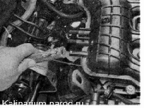
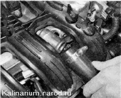
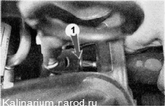
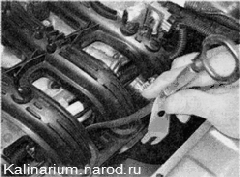
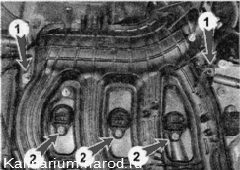
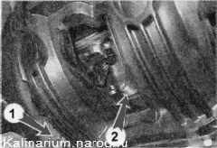
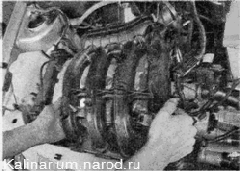

Впускной модуль снятие и установкаВпускной модуль демонтируем для проверки форсунок при необходимости снятия топливной рампы, а также в других случаях при ремонте двигателя. Для выполнения работы потребуется смотровая канава или эстакада. Снятие 1. Снимаем дроссельный узел и сбрасываем давление топлива. Совет Дроссельный узел можно снять, не отсоединяя шлангов. Достаточно отсоединить его от фланца впускного модуля. 2. Отсоединяем трос привода дроссельной заслонки от впускного модуля. 3. Отсоединяем колодки жгутов проводов от катушек зажиганияти отводим жгут в сторону. 4. Отсоединяем колодку жгута проводов отдатчика положения распределительного вала и отводим жгут в сторону. 5. Ослабив затяжку хомута, снимаем с патрубка впускного модуля шланг вакуумного усилителя тормозов.  6. Снимаем воздухозаборник воздушного фильтра 7. Ключом на 8 мм ослабляем затяжку хомута, крепящего шланг системы вентиляции картера двигателя и снимаем шланг с патрубка крышки головки блока цилиндров. 8. Короткой крестовой отверткой отворачиваем саморез 1 крепления направляющей трубки указателя уровня масла. 9. Вынимаем направляющую трубку вместе с указателем уровня масла из блока цилиндров двигателя и снимаем ее. 10. Ключом на 10 мм отворачиваем две гайки 1 крепления впускного модуля к крышке головки блока цилиидров и три болта 2 крепления катушек зажигания первого, второго и третьего цилиндров. И. Снимаем катушки зажигания первого, второго и третьего цилиндров 12. Снимаем брызговик двигателя или защиту картера (если установлены). 13. Торцовым ключом на 13 мм отворачиваем три гайки 2 и два болта 1 крепления впускного модуля к боковой поверхности головки блока цилиндров двигателя. 14. Сдвинув вперед впускной модуль, снимаем топливную рампу. 15. Снимаем впускной модуль с двигателя. Установка Устанавливаем впускной модуль в обратной последовательности. Поврежденные уплотнительные кольца впускного модуля заменяем. |